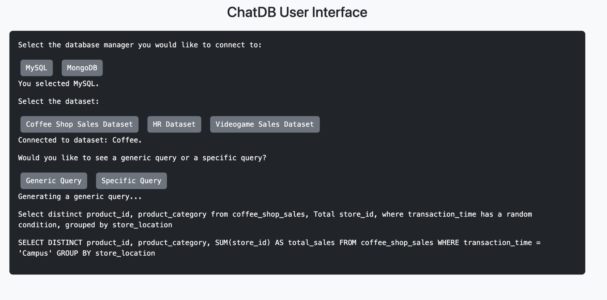

Input layer
Guided controls
Database, dataset, query mode, and clause choices reduce ambiguity while keeping learners in control.
Side project / Database learning
A learning tool that builds SQL and MongoDB examples from practice data, runs them, and shows learners what each query returns.
Project goal
ChatDB was built for learners who could read a finished SQL example but struggled to create one from a real database schema.
Use the selected database, table, field names, and data types so the query is valid for the practice dataset.
Show the plain-language request beside the generated SQL or MongoDB operation.
Execute the query and return its result so the learner can connect syntax with behavior.

Try the interaction model
Sum transaction quantity by store location.
SELECT store_location, SUM(transaction_qty)
FROM coffee_shop_sales
GROUP BY store_location;Generated from known fieldsAt a glance
Database courses often present finished queries. Learners see correct syntax, but they do not see how a table's field types constrain the query or what changes when another clause enters the statement.
We designed ChatDB as a practice loop. A learner selects a database and dataset, asks for a fully random example or chooses constructs such as WHERE, GROUP BY, and ORDER BY, then sees the generated query run against the underlying data.
The deliverable was a working browser prototype: choose MySQL or MongoDB, select one of six practice datasets, build a query, and inspect the returned data.
Start in MySQL or MongoDB so the language and available operations match the selected system.
Work with a known table or collection whose field names and data types are available to the generator.
Request a generic random example or select the clauses the example should demonstrate.
Read the plain-language intent beside the query, then inspect its results from the live database connection.
Input layer
Database, dataset, query mode, and clause choices reduce ambiguity while keeping learners in control.
Generation layer
Templates choose fields that fit each operation. Math uses numeric fields, while fields that would break the query stay out.
Execution layer
mysql-connector sends SQL to MySQL. PyMongo runs find and aggregate operations in MongoDB.
Application layer
A Python API coordinates user choices, query generation, database execution, formatted results, and diagnostic logging.
MySQL
Examples combine selection, filtering, grouping, ordering, and numeric aggregation.
MongoDB
Examples introduce document retrieval and aggregation pipelines across varied field structures.
Generated example
SELECT store_location, SUM(transaction_qty)
FROM coffee_shop_sales
WHERE transaction_qty > 10
GROUP BY store_location;
Random generation created problems that hand-written classroom examples avoid. A numeric threshold paired with a text field caused failures. Valid combinations sometimes returned empty results. MySQL and MongoDB also required different connection and error-handling paths.
We added type-aware field selection, sampled values from compatible columns, tested combinations of constructs, checked data integrity, and handled faulty input. This shifted the project from a query demo toward a dependable learning tool.
Constraint
We used explicit controls and template logic, a tradeoff approved by the teaching team.
Constraint
The browser experience proved the interaction model. The terminal remained the reliable primary interface for database operations.
The next release should open in the browser without asking learners to install a database. It should also show how each part of a query changes the results and save a simple practice history.
Typing a question in everyday language can come later. The first priority is reliable practice, clear errors, and an easy way to explore each dataset.